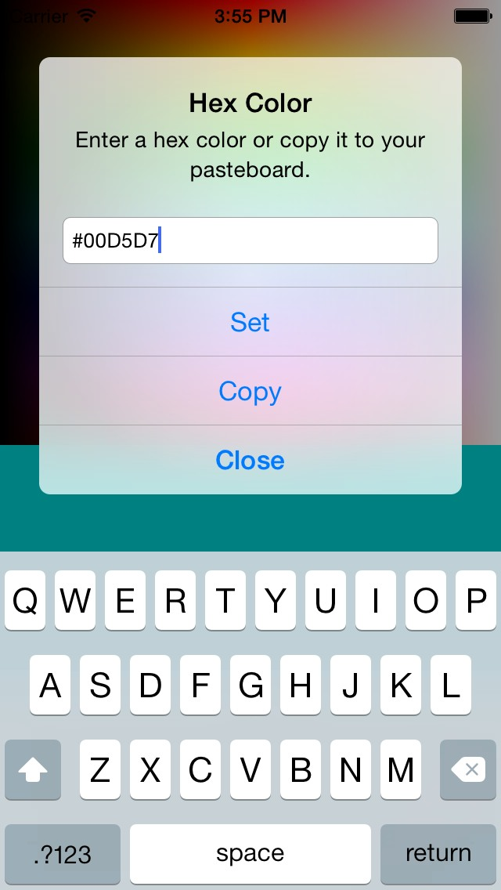

Compatible with iOS 7, 8, 9 and 10
An updated version of the tweak "prime" based on a /r/TweakBounty request.
Changes recent call-log title color based on type of call:
- Blue for incoming calls
- Green for outgoing calls
- Red for missed calls
Colors are configurable in settings

Please feel free to report issues on iPhoneTech EG.

 @MUsalehofficial
@MUsalehofficial